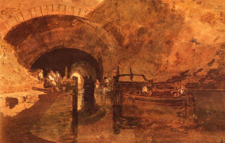

Sanhedrin 72- Judgment on the Account of the Ultimate End
A wayward and rebellious son is judged on account of his ultimate end: having accustomed himself to stealing and indulgence, he will eventually rob and kill people. Therefore, let him die while he is still innocent, and not guilty of a capital crime. For the wicked, death is beneficial to them and to the world, but for the righteous, death is detrimental to them and to the world.
A burglar who enters a house by tunneling through its wall is judged on account of his ultimate end. He is aware that the occupant of the house will defend his belongings, and it is therefore assumed that the burglar decides to kill an occupant if that becomes necessary. Therefore, the occupant is permitted to kill the burglar.
Art: Joseph Mallord William Turner- A Canal Tunnel Near Leeds